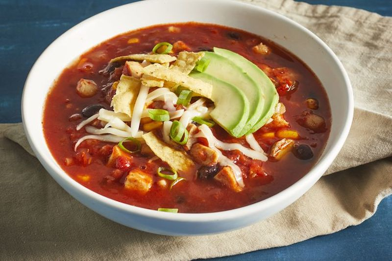

Chicken Tortilla Soup

An authentic Mexican Dish
If you're looking for a hearty and filling soup that will satisfy your Mexican food craving, then look no further.
This chicken tortilla soup is the comfort food that offers both spicy, Mexican-flair and ingredients that will keep you full and happy.
Ingredients Required
- 1 tablespoon olive oil
- 1 medium onion, chopped
- 3 gloves garlic, minced
- 1 can crushed tomatoes
- 1 can condensed chicken broth
- 1 & 1/4 cups water
- 2 ts chili powder
- 1 ts dried oregano
- 1 can black beans, rinsed and drained
- 2 large boneless chicken breast halves, cooked and cut into bit sized pieces
- 1 can chopped green chile peppers
- 1/4 cup chopped fresh cilantro
- 1/2 cup crushed tortilla chips
- 2 medium avocados, sliced
- 1/2 cups monterey Jack Cheese, shredded
- 2 tablespoons green onions, chopped
Cooking Instructions
- Heat oil in a stockpot over medium heat. Add onion and garlic;
saute until soft, about 5 minutes. Stir in crushed tomatoes, condensed broth, water, chili powder, and oregano;
bring to a boil. Reduce heat and simmer for 5 to 10 minutes.
- Stir in black beans, cooked chicken, corn, hominy, chile peppers, and cilantro. Simmer for 10 minutes.
- Ladle soup into individual serving bowls,
and top with crushed tortilla chips, avocado slices, Monterey Jack cheese, and green onions.